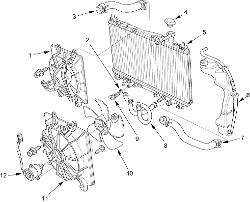

 |
- A/C CONDENSER FAN ASSEMBLY
Replacement, page 10-11 in the '01 Civic Shop Manual on this CD
Fan Motor Test, page 10-6 in the '01 Civic Shop Manual on this CD
- O-RING
- UPPER RADIATOR HOSE
- RADIATOR CAP
- RADIATOR
Replacement, page 10-11 in the '01 Civic Shop Manual on this CD
- COOLANT RESERVOIR
- LOWER RADIATOR HOSE
- ATF COOLER HOSES
- DRAIN PLUG
- RADIATOR FAN
Replacement, page 10-11 in the '01 Civic Shop Manual on this CD
- RADIATOR FAN SHROUD
Replacement, page 10-11 in the '01 Civic Shop Manual on this CD
- RADIATOR FAN MOTOR
Test, page 10-6 in the '01 Civic Shop Manual on this CD
Replacement, page 10-11 in the '01 Civic Shop Manual on this CD
|